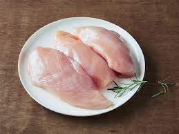
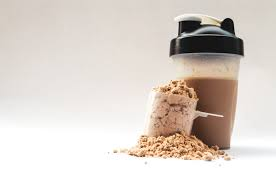
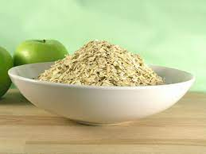
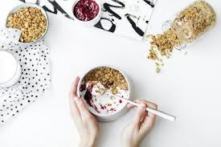
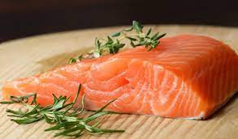

운동부위 리스트
운동목록

(닭가슴살):순수한 단백질 영양적 구성으로 운동후 근육 상처 회복에 효과적이다

(단백질 쉐이크):닭가슴살의 닭비린 냄세가 익숙치 않은 사람은 단백질 쉐이크를 음용하자 주의 할 점은 단백질 쉐이크를 적정치 이상 사용하게 되면 간에 무리가 올 수 있으니 주의하자

(오트밀):운동후 필요한 영양소는 단백지도 있지만 가장 중요한 영양소는 탄수화물 이라 할 수 있다 오트밀을 닭가슴살 과 활용하여 단백질과 탄수화물을 할께 먹을 수 있는 레시피도 있으니 활용 해 보자

(저지방 요거트):운동후 필요한 탄수화물+단백질을 챙길 수 도 있고 단백질은 섭취하면 신장이 악화되기 마련인데 저지방 요거트의 유산균으로 장기의 회복을 도울 수 있다

(연어 스테이크):운동후 필요한 전반적 영양소와 뼈관절 건강,성장 발달 등 슈퍼푸드로 몸에 좋다